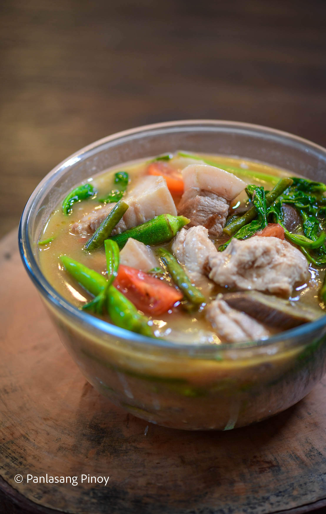
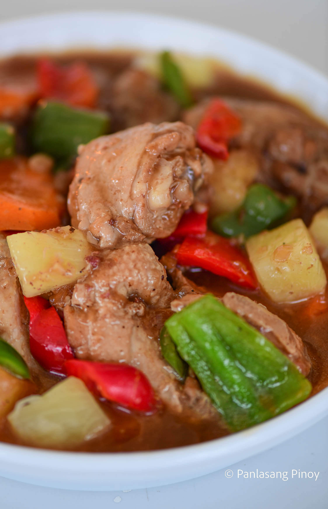
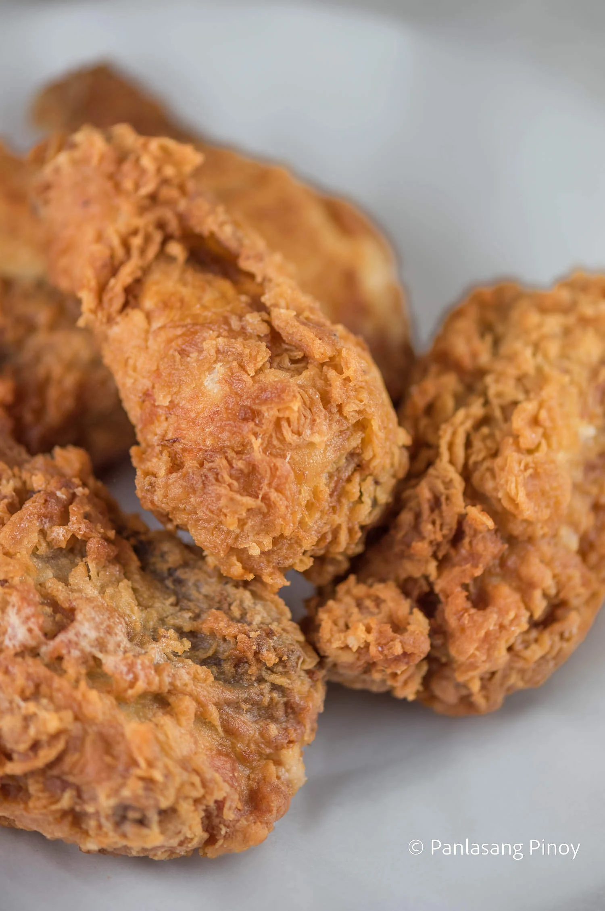
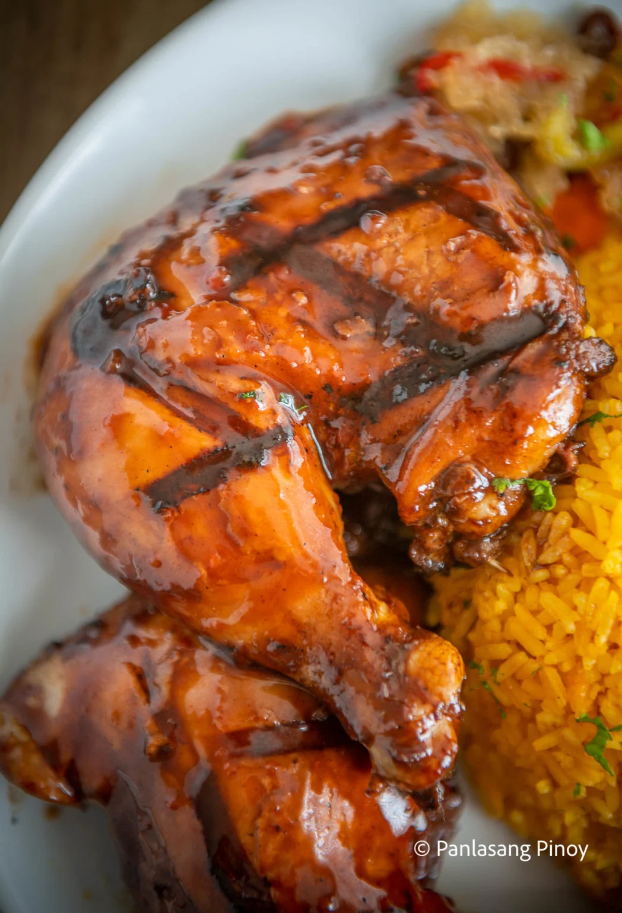
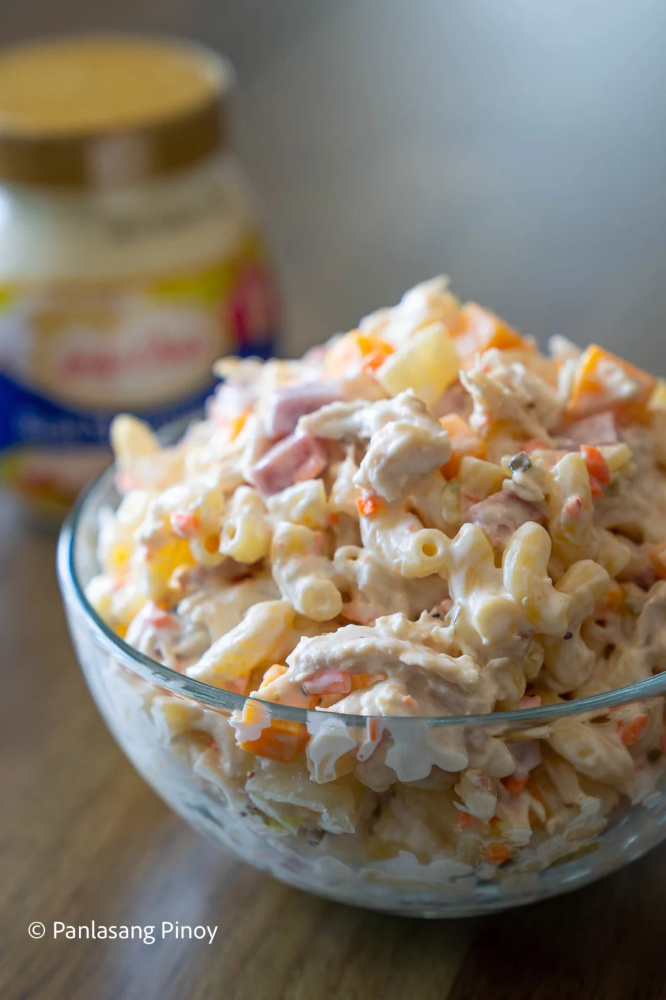
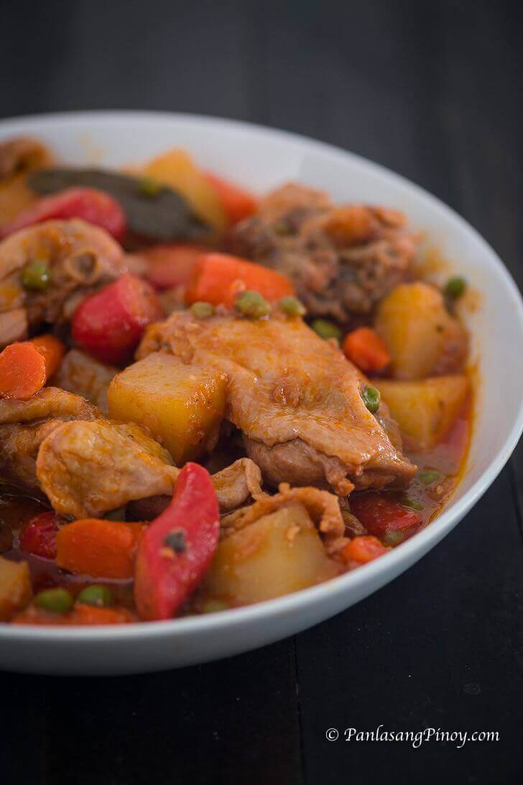
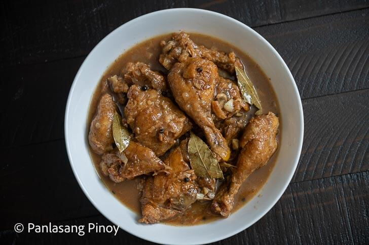
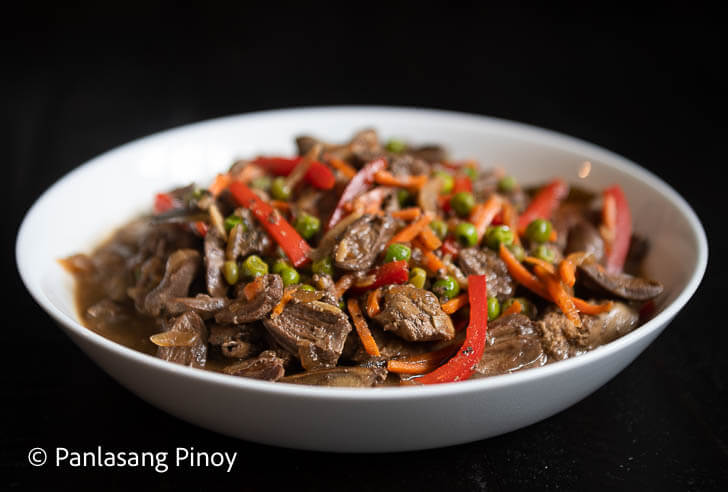
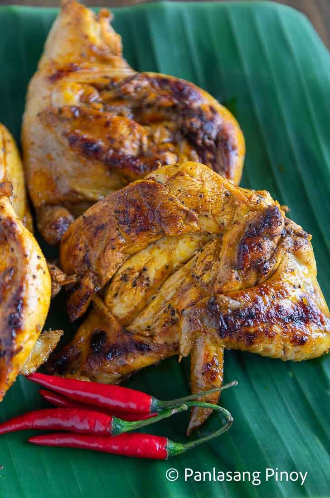
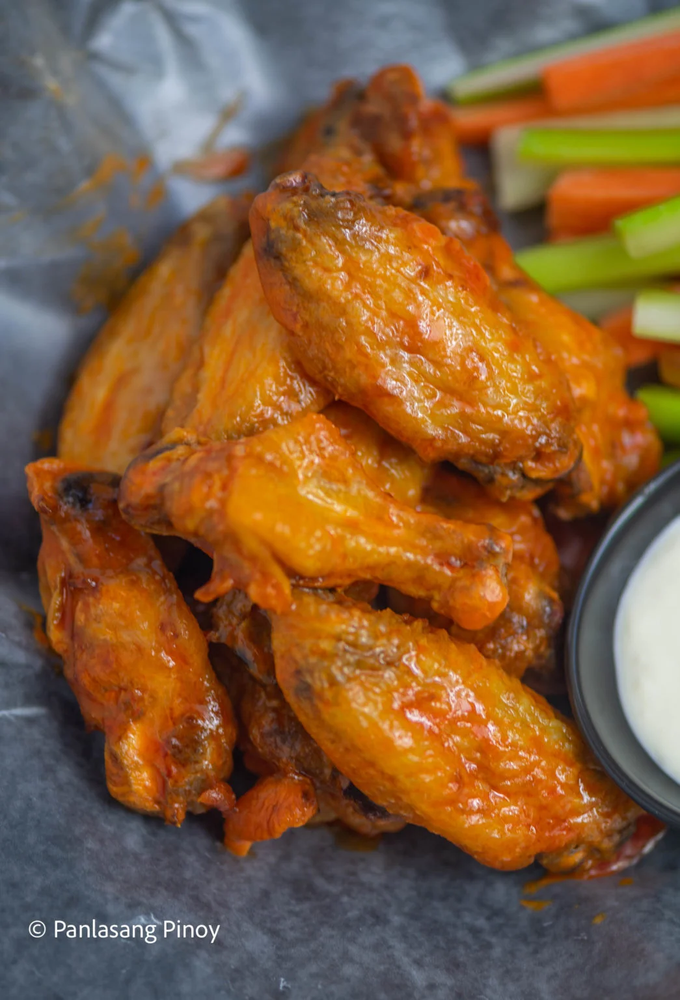

Pork and Chicken Sinigang
Ingredients
- 1 lb. pork belly cubed
- 1 lb. chicken cut into serving pieces
- 44 g Knorr Sinigang sa Sampaloc Mix Original
- 1 onion wedged
- 5 taro (gabi) diced
- 1 daikon radish sliced
- 12 okra
- 5 long green pepper
- 15 string beans cut into 2-inch pieces
- 3 eggplant sliced
- 2 cups kangkong leaves
- 1 ½ quarts water
- 2 tablespoons cooking oil
- Fish sauce and ground black pepper to taste
Instructions
- Heat oil in a cooking pot. Saute pork until most of the fat renders. Add chicken. Continue sautéing until the exterior of the chicken turns light brown in color.
- Add onion, taro, daikon radish, and half of the tomato. Cook for 5 minutes. Remove the chicken and set it aside.
- Pour water into the cooking pot. Let boil.
- Add Knorr Sinigang sa Sampaloc Recipe Mix. Cover the pot and continue cooking in low heat until the pork gets tender (note: around 1 hour).
- Add the chicken back into the pot. Cook for 15 minutes.
- Put the long green pepper, string beans, okra, and eggplant. Cook for 8 minutes.
- Add the remaining tomatoes. Season with fish sauce and ground black pepper.
- Add the kangkong leaves. Cover the pot. Turn the heat off and let it stay for 2 minutes.
- Transfer to a serving bowl. Serve hot with rice.
- Cook Time: 1 hour
- Share and enjoy!

Malapot na Pininyahang Manok
Ingredients
- 2 lbs. chicken cut into serving pieces
- 1 Knorr Chicken Cube
- 8 ounces pineapple chunks
- 1 carrot thinly sliced crosswise
- 1 red bell pepper sliced into squares
- 1 green bell pepper sliced into squares
- 3 tablespoons soy sauce
- 2 tablespoons liver spread
- 1 onion diced
- 5 cloves garlic chopped
- 4 tablespoons cooking oil
- 2 cups water
- 2 tablespoons cornstarch
- 1 teaspoon sugar
- Salt and ground black pepper to taste
Instructions
- Heat oil in a pan. Pan-fry the chicken pieces until the sides turns light brown in color. Remove from the chicken and set aside.
- Sauté onion and garlic using the remaining oil.
- Add the chicken back in once the onion softens.
- Pour soy sauce and stir while deglazing the chicken residue stuck on the pan.
- Add pineapple chunks and water. Let boil.
- Put-in the Knorr Chicken Cube. Cover the pan. Adjust the heat between low to medium settings. Cook the chicken for 25 minutes.
- Add liver spread and carrot. Cook for 5 minutes.
- Add bell peppers. Season with salt and ground black pepper.
- Combine cornstarch with 3 tablespoons of water. Mix well and then pour into the pan. Stir until the sauce reaches your desired thickness.
- Add sugar. Cook for a minute.
- Transfer to a serving plate. Serve warm with rice.
- Cook Time : 45 minutes
- Share and enjoy!

Crispy Fried Chicken Recipe
Ingredients
- 3 lbs. chicken cut into individual pieces
- 1 tablespoon salt
- 3 cups cooking oil
- 1 carrot thinly sliced crosswise
- 1 cup all-purpose flour
Batter Ingredients
- 1 green bell pepper sliced into squares
- ¾ cup evaporated milk
- 1 Knorr Chicken Cube
- 2 eggs
- ¾ cups all-purpose flour
- 1 teaspoon baking powder
- 2 teaspoons garlic powder
- ½ teaspoon salt
- ¼ teaspoon ground black pepper
Instructions
- Rub salt all over the chicken. Let it stay for 15 minutes.
- Heat the oil in a cooking pot.
- Prepare the batter. Start by pressing a fork on the chicken cube until it is completely squashed. Combine it with warm milk. Stir until well blended. Set aside.
- Combine flour, baking powder, garlic powder, salt, and ground black pepper. Mix well using a fork or a wire whisk. Set aside..
- Beat the eggs in a large mixing bowl. Add the milk mixture. Continue to beat until all the ingredients are all incorporated. Add half of flour mixture. Whisk. Add the remaining half and whisk until the texture of the batter becomes smooth.
- Dredge the chicken in flour and then dip in batter. Roll it again in flour until completely covered. Fry in medium heat for 7 minutes per side.
- Remove from the pot and put in a plate lined with paper towel. This will absorb the oil.
- Serve with ketchup or gravy.
- Cook Time : 15 minutes
- Share and enjoy!

Chicken Barbecue
Ingredients
- 4 pieces chicken leg quarters cleaned
- 1/2 cup soy sauce
- 1 piece lemon or 4 pieces calamansi
- 2 teaspoons salt
- 1 teaspoon ground black pepper
- 1/2 cup banana ketchup
Instructions
- Make the marinade by combining the soy sauce, juice of 1 lemon, banana ketchup, salt, and ground black pepper in a bowl. Stir to mix.
- Put the chicken leg quarters inside a large freezer bag, and then pour-in the marinade.
- Shake the bag gently to coat the chicken with marinade then remove the air inside the bag. Seal the bag then refrigerate overnight.
- Remove the chicken from the bag and transfer the remaining marinade to a bowl.
- Heat-up your grill and start grilling the chicken under medium heat for 12 to 15 minutes per side or until the chicken is completely cooked. Do not forget to baste the chicken with the remaining marinade mixture.
- Note: Chicken takes a long time to cook. Grilling it in high heat will cause the outer part of the chicken to cook earlier leaving the inside raw.
- Remove from the grill and transfer to a serving plate.
- Serve with steamed rice.
- Cook Time : 24 minutes
- Share and enjoy!

Father’s Day Chicken Macaroni Salad
Ingredients
- 15 ounces Lady’s Choice Real Mayonnaise
- 6 ounces chicken breast
- 8 ounces pineapple chunks
- 7 ounces elbow macaroni
- 1/4 cup carrots minced
- 4 tablespoons sweet pickle relish
- 3/4 cup pineapple tidbits
- 4 ounces cheddar cheese diced
- 2 teaspoons sugar
- Salt and ground black pepper to taste
Instructions
- Cook macaroni based on package instructions. Set aside.
- Boil chicken in 3 cups of water for 30 minutes. Remove from the pot and let it cool down. Shred the chicken afterwards and set aside.
- Combine all the ingredients in a large bowl. Add Lady’s Choice Real Mayonnaise and season with sugar, salt, and ground black pepper. Fold until all ingredients are well blended.
- Cover the bowl and refrigerate for at least 1 hour.
- Cook Time : 11 minutes
- Share and enjoy!

Chicken Afritada Recipe
Ingredients
- 1 ½ lbs. Chicken cut into serving pieces
- 2 piece potato cubed
- 1 piece carrot sliced
- 8 oz. tomato sauce
- 3 pieces hotdog sliced
- ½ cup green peas
- 3 pieces bay leaves
- 1 piece red onion chopped
- 2 teaspoons garlic minced
- 3 cups chicken broth
- ½ teaspoon sugar
- 3 tablespoons cooking oil
- Salt and ground black pepper to taste
Instructions
- Heat the oil in a cooking pot. Saute onion and garlic until the onion softens.
- Add chicken. Cook for 30 seconds. Turn it over and cook the other side for another 30 seconds.
- Pour tomato sauce and chicken broth. Cover. Let boil.
- Add dried bay leaves. Cover the cooking pot. Continue to cook in medium heat for 30 minutes./li>
- Add hotdogs and carrot. Cook for 3 minutes.
- Add potato. Cover the pot and cook for 8 minutes.
- Add green peas. Cook for 2 minutes.
- Season with salt and ground black pepper.
- Cook Time : 45 minutes
- Share and enjoy!

Chicken Paksiw Recipe
Ingredients
- 1 lb. leftover chicken cut into pieces
- 1 piece Knorr Chicken Cube
- 1 cup lechon sauce
- 5 cloves garlic chopped
- 1 piece onion chopped
- 1 teaspoon whole peppercorn
- 4 pieces dried bay leaves
- 1/2 cup white vinegar
- 1/4 cup sugar
- 1 cup water
- Salt to taste
- 3 tablespoons cooking oil
Instructions
- Heat oil in a pan. Saute onion and garlic.
- Once the onion softens, add chicken. Stir and saute for 1 minute.
- Pour the lechon sauce into the pan and then add vinegar. Let the mixture boil before stirring.
- Pour water into the pan. Let it boil.
- Add Knorr Chicken Cube, bay leaves, and whole peppercorn. Stir. Cover the pan and then adjust the heat to the lowest setting. Continue cooking for 35 minutes.
- Take the cover off the pan. Continue cooking until the sauce evaporates and reduces to half.
- Add sugar and then season with salt.
- Cook Time : 40 minutes
- Transfer it to a serving bowl and serve with warm rice. Share and enjoy!

Chicken Igados
Ingredients
- 1 lb chicken liver
- 1 lb chicken heart sliced into half
- 1 cup green peas
- 1/2 cup carrots Julienne
- 1 piece red bell pepper cut into strips
- 1 green bell pepper sliced into squares
- 4 pieces dried bay leaves
- 1 piece onion chopped
- 5 cloves garlic crushed
- 4 tablespoons soy sauce
- 5 tablespoons vinegar
- 1 cups water
- 6 tablespoons cooking oil
- Salt and pepper to taste
Instructions
- Heat 3 tablespoons of oil in a cooking pot. Pan-fry chicken liver for 2 minutes. Turn it over and fry the opposite side. Transfer the fried liver on a clean plate. Set aside. Note: There will be liquid coming out of the liver. Let it evaporate completely and continue frying until the liver turns light brown. Do the same step until the liver is completely cooked. Do not over fry it though to keep it from tasting bitter.
- Wipe the same pan with a clean paper towel to remove most of the liver residue. Heat remaining cooking oil. Saute garlic until it starts to brown. Add onion and continue sautéing until it softens.
- Add chicken heart. Saute for 2 minutes.
- Pour soy sauce and vinegar into the pot. Cover the pot and let the mixture boil. Cook for 1 minute.
- Add bay leaves and water. Cover the pot. Continue cooking using low to medium heat for 35 minutes. Note: add more water if needed.
- Put the fried liver into the pot. Stir. Cover and cook for 3 minutes.
- Cook Time : 45 minutes
- Transfer to a serving plate. Serve and enjoy!

SINIGANG MIX INASAL NA MANOK
Ingredients
- 1 whole chicken
Marinade Ingredients
- 2 1/2 tablespoons Knorr Sinigang sa Sampaloc Recipe Mix Original
- 1 head garlic
- 3 thumbs ginger
- 1 stalk lemongrass chopped
- 1 1/2 cups lemon lime soda
- 1 1/2 teaspoons salt
- 1/2 teaspoon ground black pepper
Basting Sauce Ingredients:
- 8 tablespoons margarine
- 2 1/2 tablespoons annatto seeds
Instructions
- Cut the chicken into serving pieces. A whole piece of chicken can be cut into 4 parts. See video below for tips.
- Prepare the marinade ingredients by grinding garlic, lemongrass, and ginger using a mortar and pestle tool. Arrange in a large bowl. Add salt, ground black pepper, Knorr Sinigang sa Sampaloc Recipe Mix, and lemon lime soda. Mix well.
- Place the chicken inside a resealable bag. Pour-in marinade. Let the air out and then seal the bag. Let the chicken stay for at least 2 hours.
- Prepare basting sauce by Heating a saucepan. Add margarine. Let it melt. Add annatto seeds. Cook the seeds in low heat until the color of the mixture turns orange. Filter the seeds using a kitchen sieve. Note: Discard the seeds after filtering. Season with salt and ground black pepper.
- Heat-up your grill. You can use either gas o charcoal grill for this process.
- Remove the chicken from the bag.
- Grill chicken while flipping it every 5 minutes (or until needed) until the inner temperature reaches 165F. Brush basting sauce over the chicken while grilling.
- Serve with warm rice, papaya atchara, and with your favorite dipping sauce.
- Cook Time : 30 minutes
- Share and enjoy!

Original Buffalo Chicken Wings
Ingredients
- 3 lbs. chicken cut into individual pieces
- 1 tablespoon salt
- 3 cups cooking oil
- 1 carrot thinly sliced crosswise
- 1 cup all-purpose flour
Batter Ingredients
- 1 green bell pepper sliced into squares
- ¾ cup evaporated milk
- 1 Knorr Chicken Cube
- 2 eggs
- ¾ cups all-purpose flour
- 1 teaspoon baking powder
- 2 teaspoons garlic powder
- ½ teaspoon salt
- ¼ teaspoon ground black pepper
Instructions
- Rub salt all over the chicken. Let it stay for 15 minutes.
- Heat the oil in a cooking pot.
- Prepare the batter. Start by pressing a fork on the chicken cube until it is completely squashed. Combine it with warm milk. Stir until well blended. Set aside.
- Combine flour, baking powder, garlic powder, salt, and ground black pepper. Mix well using a fork or a wire whisk. Set aside..
- Beat the eggs in a large mixing bowl. Add the milk mixture. Continue to beat until all the ingredients are all incorporated. Add half of flour mixture. Whisk. Add the remaining half and whisk until the texture of the batter becomes smooth.
- Dredge the chicken in flour and then dip in batter. Roll it again in flour until completely covered. Fry in medium heat for 7 minutes per side.
- Remove from the pot and put in a plate lined with paper towel. This will absorb the oil.
- Serve with ketchup or gravy.
- Cook Time : 15 minutes
- Share and enjoy!